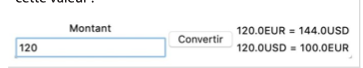
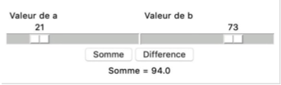
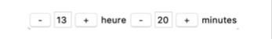

Exercice PYTHON CH3 : Interaction
Le pitch
Les programmes informatiques peuvent interagir avec l’utilisateur en récupérant des valeurs saisies au clavier ou en proposant des interfaces graphiques simples.
En Python, cela se fait avec input() ou avec des bibliothèques comme nsi_ui.
📝 Exercices
🔹 Exercice 1 — Fonction booléenne
Écrire une fonction input_bool pour saisir une valeur booléenne.
- La fonction prend un message en paramètre
- Elle retourne :
Truesi l’utilisateur tape oui ou oFalsesi l’utilisateur tape non ou n- Si l’utilisateur tape autre chose :
- afficher un message d’erreur
- redemander jusqu’à obtenir une valeur valide
🔹 Exercice 2 — Conversion de températures
a. Conversion simple
Écrire un programme qui saisit une valeur en degrés centigrades et la convertit en degrés Fahrenheit.
Formule :
degreC = (degreF - 32) * 5/9
b. Programme amélioré
Modifier le programme pour que l’utilisateur puisse saisir également l’unité (°C ou °F). Le programme doit alors convertir dans l’autre unité.
C. construire une interface graphique pour cet exercice
🔹 Exercice 3 — Table de multiplication
Écrire un programme qui demande d’entrer un nombre entre 1 et 9 et affiche la table de multiplication de ce nombre.
Exemple :
1 x 6 = 6
...
10 x 6 = 60
💡 Indication
On utilisera les chaînes de formatage avec alignement :
f'{x:4}'
🔹 Exercice 4 — Conversion de monnaies
Écrire un programme avec une interface graphique permettant de convertir entre deux monnaies.
Le programme demandera d’abord à l’utilisateur : - les noms des deux monnaies - le taux de change
Puis, il proposera une interface avec : - un champ de saisie pour le montant - un bouton "Convertir" - l’affichage des deux conversions

🔹 Exercice 5 — Somme et différence
a. Reprendre le programme du cours qui permet d’additionner deux nombres.
Ajouter un bouton permettant de calculer la différence entre les deux nombres.
b. Utiliser des conteneurs pour obtenir une interface organisée : - deux champs de saisie (valeur de a et valeur de b) - deux boutons : "Somme" et "Différence" - affichage du résultat

🔹 Exercice 6 — Saisie d’une heure
Écrire un programme qui affiche une interface graphique pour saisir une heure complète.

L’interface doit comporter : - des boutons "+" et "-" pour modifier l’heure et les minutes - un affichage de l’heure actuelle
Contraintes : - l’heure doit rester valide (0 à 23) - les minutes doivent rester entre 0 et 59
Exemple : - si l’heure est 13 h 59 et que l’on ajoute une minute → 14 h 00
💡 Remarque
La fonction suivante peut être utile :
set_width(interacteur, largeur)
- Pour un champ texte (
entry) → largeur en nombre de caractères - Pour les autres éléments → largeur en pixels